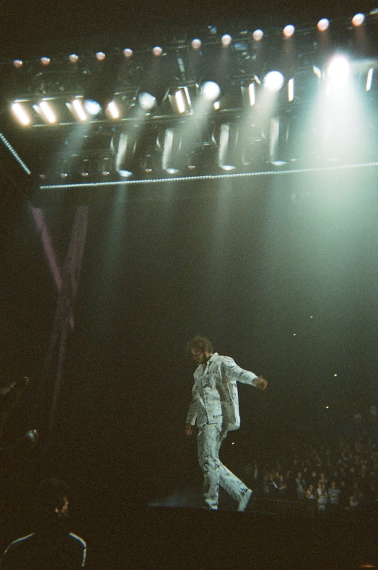

Post Malone
Post Malone, egentligen Austin Richard Post, född 4 juli 1995, är en amerikansk rappare, sångare, låtskrivare och musikproducent. Han är känd för sin unika musikstil som kombinerar element från olika genrer.
Malone fick sitt genombrott år 2015 med låten "White Iverson". Sedan dess har han släppt flera framgångsrika singlar och album, inklusive "Stoney" och "Beerbongs & Bentleys". Hans musik har nått stor popularitet över hela världen.
Utöver sin musik är Post Malone också känd för sina många tatueringar och sitt intresse för tatueringsskonst.